1 - 프로그램 다운로드와 필수설정
2 - 프로그램의 기능과 사용법
1. 다운로드 사이트에서 원하는 버전을 찾고, 설치파일 또는 무설치를 클릭합니다.
(설치파일 = 프로그램을 컴퓨터에 설치하여 사용 / 무설치 = 프로그램을 컴퓨터에 설치하지 않고 사용)
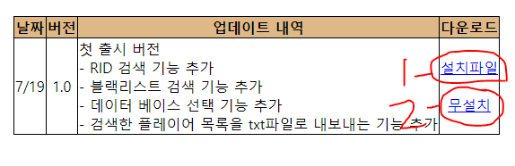
2-1. 설치파일을 다운로드 했다면 그대로 설치를 진행 후, 바탕화면이나 시작에 생성되는 프로그램 아이콘을 클릭하여 프로그램을 실행시킵니다.
2-2. 무설치 파일을 다운로드 했다면 zip파일의 압축을 풀어 RDRG_BlackList_Program.exe를 실행시킵니다.
3. 프로그램이 실행됐다면 우측상단의 최대화 버튼을 클릭해 프로그램의 크기를 키웁니다.
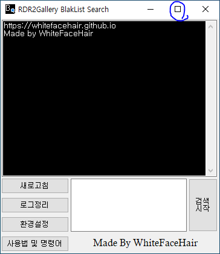
4. 소셜클럽 웹사이트에 접속되면 로그인버튼을 클릭합니다.
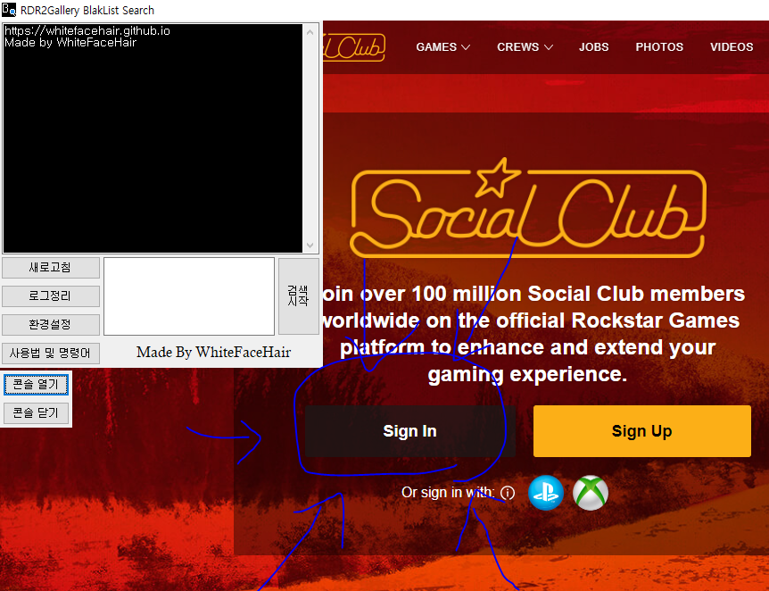
5. 자동로그인 체크박스를 클릭하고 자신의 계정 또는 부계정으로 로그인합니다.
자동로그인을 사용하지 않으면 프로그램 실행 시 마다 소셜클럽에 로그인을 해줘야 합니다.
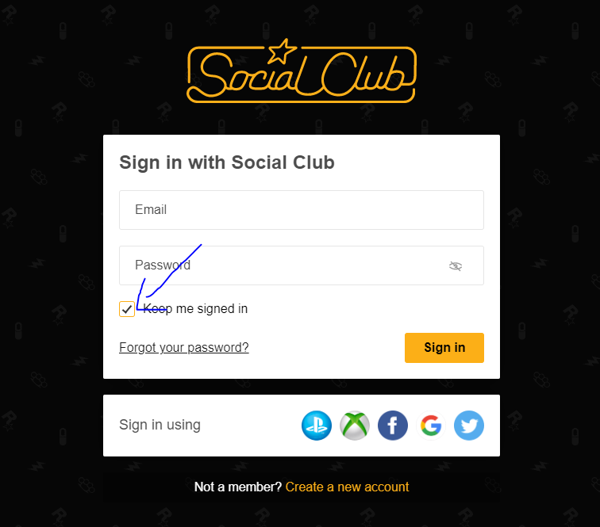
6. 최소화 버튼을 클릭 후, 프로그램을 사용합니다.
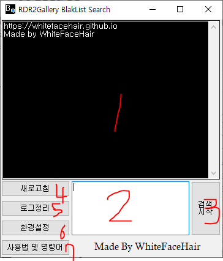
1 - 현재 진행상황이나 검색 결과를 알려주는 콘솔(로그) 화면
2 - 검색할 닉네임이나 명령어를 입력하는 텍스트 박스
3 - 검색이나 명령어를 수행하는 버튼
4 - 사이트를 새로고침하는 버튼(주의사항에서 자세히 설명함)
5 - 콘솔(로그) 화면을 지워주는 버튼
6 - 프로그램의 설정을 변경하는 버튼
7 - 이 사이트로 이동하는 버튼
페이지가 로드되었다는 문구가 표시되면 텍스트 박스에 test를 입력 후, 검색시작 버튼을 클릭합니다.
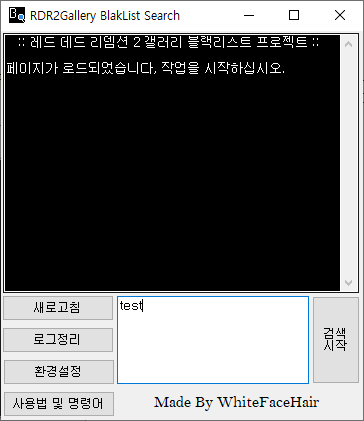
asdfasdf의 rid가 null로 표기된다면 새로고침 버튼을 누르고 다시 test를 입력해 rid가 숫자로 표기될 때 까지 과정을 반복합니다.
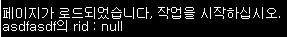
asdfasdf의 rid가 숫자로 표기된다면 원하는 작업을 시작합니다.
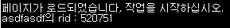
텍스트 박스에 검색을 원하는 닉네임을 적습니다.
한 번에 여러 명을 검색할 수 있으며, 여러 명을 검색할 때는 엔터로 줄넘김해 입력해야합니다.
원하는 닉네임을 입력했다면 검색시작 버튼을 클릭해 rid 및 블랙리스트 여부를 확인합니다.
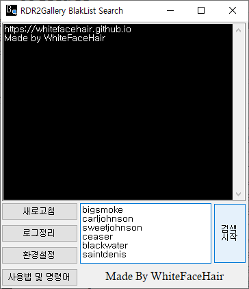
블랙리스트에 등록된 플레이어는 닉네임 앞에 [B]가 표시됩니다.
사용 중인 DB에 따라 검색결과가 다를 수 있습니다.
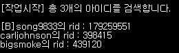
만약 닉네임을 정확하게 입력했는데eh rid가 null로 표기된다면 새로고침 버튼을 클릭 후 재검색 해야합니다.
환경설정을 클릭 후, 검색결과를 txt파일로 저장에 체크하고 검색 딜레이를 1초 이상으로 입력 후 적용버튼을 클릭합니다.
(인터넷 속도가 느리다면 딜레이를 2초 이상으로 입력하는 걸 추천합니다.)
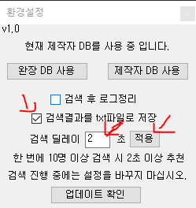
프로그램을 재시작하고 검색을 원하는 닉네임들을 텍스트 박스에 입력 후, 검색시작 버튼을 클릭합니다.
(검색은 텍스트박스에 닉네임을 입력한 순서대로 진행되지 않습니다.)
검색이 끝났다면 파일탐색기를 열어 다음 경로로 이동합니다.
C:\WhiteFaceHair\RDR2G_BlackList\Result
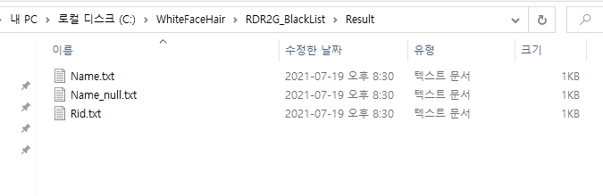
Name.txt에는 rid가 검색된 플레이어들의 닉네임이 저장되어 있습니다.
Rid.txt에는 rid가 검색된 플레이어들의 rid가 저장되어 있습니다.
Name_null.txt에는 rid가 검색되지 않은 플레이어들의 닉네임이 저장되어 있습니다.
(RID가 검색되지 않은 플레이어들은 새로고침 후 다시 검색하면 RID가 표시될 수도 있습니다.)
Name.txt와 Rid.txt에 입력된 내용들을 모두 복사 후, 구글 시트프레스 등에 붙여넣기 하면 일일히 입력하지 않아도 복붙 두 번만으로 블랙리스트를 만들 수 있습니다.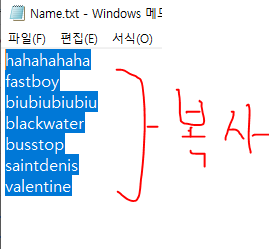
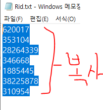
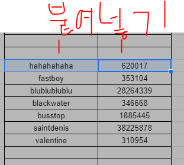
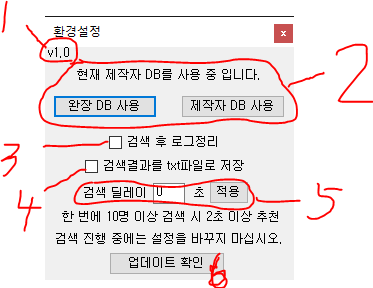
1 - 사용중인 프로그램의 버전
2 - 검색할 때 사용할 DB설정
(완장 DB = 갤러리 공지에 올라와있는 블랙리스트 명단만을 사용)
(제작자 DB = 완장DB와 오픈채팅, 디스코드, 루리웹 등 타 커뮤니티에서 활동했거나 활동중인 사람들의 닉네임을 기록한 블랙리스트 명단을 사용)
3 - 매 검색시 마다 콘솔(로그)화면을 지울지 선택하는 옵션
4 - 검색결과를 txt파일로 내보내는 옵션
5 - 인터넷 속도가 느리거나 rid가 자꾸 null로 표기되는 경우 사용하는 옵션
6 - 프로그램 업데이트를 확인하는 버튼
clear - 콘솔(로그) 화면을 정리합니다.
test - 현재 rid를 검색할 수 있는 상태인지 확인합니다.
rid가 null로 표시된다면 새로고침 버튼을 클릭.
refresh - 현재 페이지를 새로고침합니다.